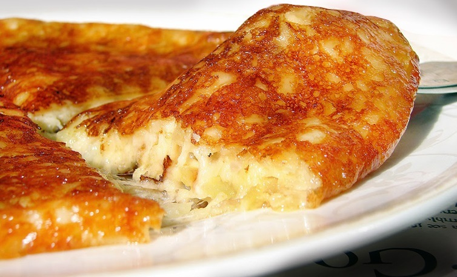
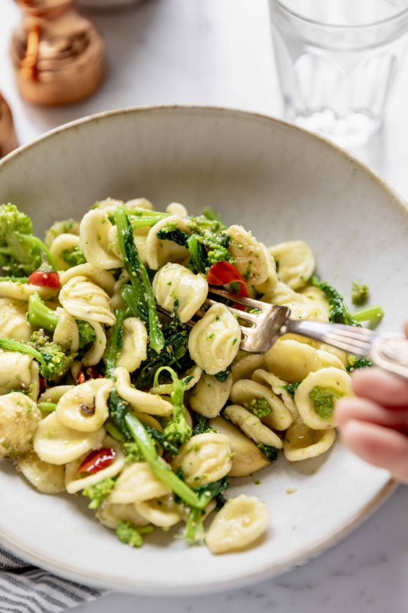

<!DOCTYPE html>
<html lang="end">
    <head>
        <meta charset="UTF-8">
        <link rel="preconnect" href="https://fonts.googleapis.com">
        <link rel="preconnect" href="https://fonts.gstatic.com" crossorigin>
        <link href="https://fonts.googleapis.com/css2?family=Open+Sans:wght@400;500;600;700&display=swap" rel="stylesheet">
     <script src="https://kit.fontawesome.com/df2423167d.js" crossorigin="anonymous"></script>

        <link rel="stylesheet" href="/assets/stylesheets/gallery-style.css">
    </head>
    <body>
        <main>
        <div class="container1 flex-gallery">
            <aside class="sidebar">
                <div class="div1 justify">
                    
                    <span class="span1 white">il Cibo </span>
                    <p class="whitep" >(Italian for Food)</p>
                    <a href="index.html"><button class="home-btn">Home</button></a>
                </div>
                <div class="parent">
                    <div><h3>ITALIAN CUISINE</h3></div>
                    <div>
                        <p class="passage2">One of the finest italian cuisine in your area  
                            selling  the true taste of Roma since the 1500s,</p>
                    </div>
                </div>
                <div class="logo" > 
                    
                    
                     <div>
                      <i class="fab face fa-facebook-f"></i>
                         
                      <i class="fab fa-twitter"></i>
                      <i class="fab fa-dribbble"></i>
                      <i class="fab fa-linkedin-in"></i>
                     
                </div>
            </aside>
            <section class="right">
                <div><h4>Items</h4></div>
                <div class="col">
                    <div class="col-1">
                        <div class="description" >
                            
                            <div >

                                <h2 class="description-h2">Frico Friulano</h2>
                                <p class="description-content">Cheese and potatoes: what colud be better? This Friulano is clean with a zesty white grapefruit flavor, and pairs well with grilled fish, green vegetables </p>

                                <a href=""><button class="btn-next" >Click here for Recipe</button> </a>
                            </div>
                        </div>
                        
                        <div class="description" >
                            
                            <div >

                                <h2 class="description-h2">Ancona Spicy Fish Stew</h2>
                                <p class="description-content">Fillet the fish and cut into bite-sized pieces, or leave them whole if small. Scrub the shellfish and clean as appropriate.</p>

                                <a href=""><button class="btn-next" >Click here for Recipe</button></a>
                            </div>
                        </div>
                        <div class="description" >
                            
                            <div >

                                <h2 class="description-h2">Orecchiette Pasta with Turnip Greens</h2>
                                <p class="description-content">Orecchiette are a pasta typical of Apulia, a region of Southern Italy. Their name comes from their shape,</p>

                                <a href=""><button class="btn-next" >Click here for Recipe</button> </a>
                            </div>
                        </div>
                        <div class="description" >
                            
                            <div >

                                <h2 class="description-h2">"Naked" Ravioli  with Ricotta and Spinach</h2>
                                <p class="description-content"> "Naked" Ricotta and spinach Gnudi are quite fragile to handle and have a very delicate flavor too.
                                    The best way to season your gnudi is with a sage and butter sauce</p>

                                <a href=""><button class="btn-next" >Click here for Recipe</button> </a>
                            </div>
                        </div>
                    </div>
                
                </div>
            </section>
        </div>
       </main>
    </body>
</html>
      